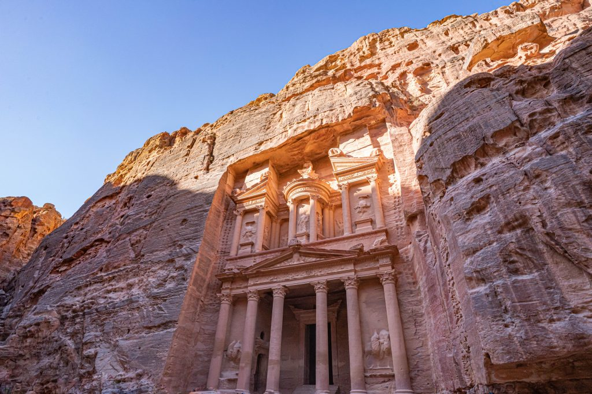

آثار البتراء
تتميز آثار البتراء بتاريخها العريق ومعمارها الفريد الذي يعكس الحضارة النبطية. يمكنك التعرف على بعض من هذه الآثار من خلال الصورة والوصف التالي:

البتراء الوردية
تعتبر البتراء الوردية من أهم المعالم الأثرية في الأردن والعالم بشكل عام، وتشتهر بمعمارها الرائع المنحوت في الصخور.